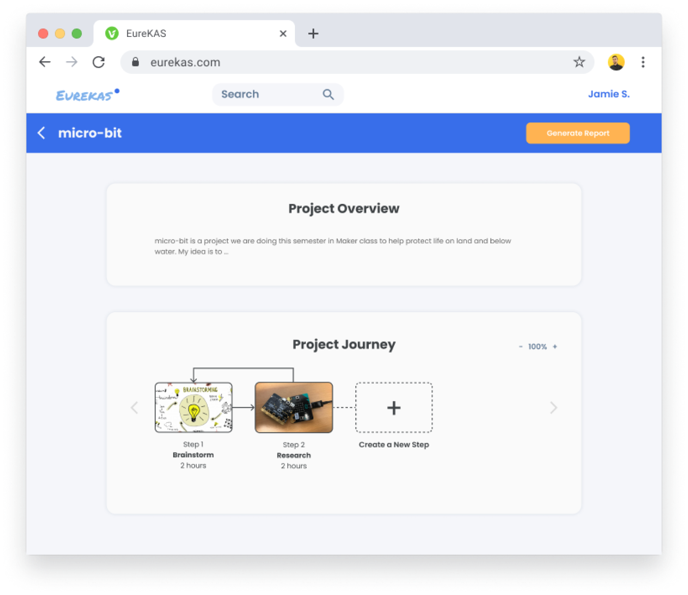
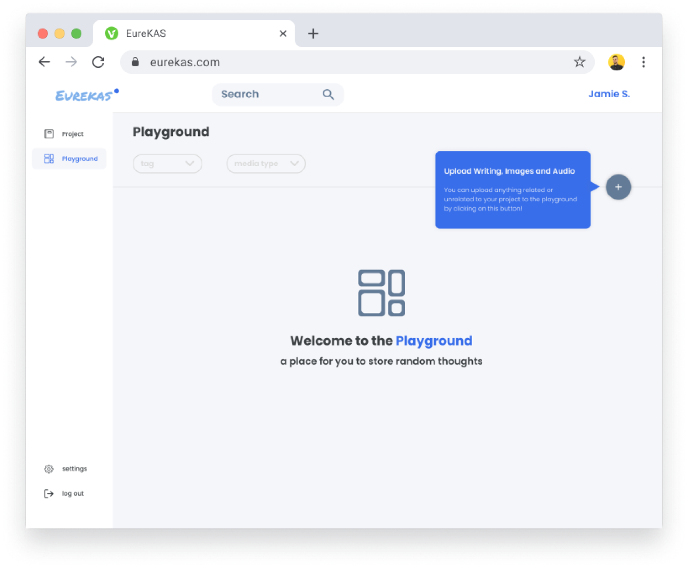
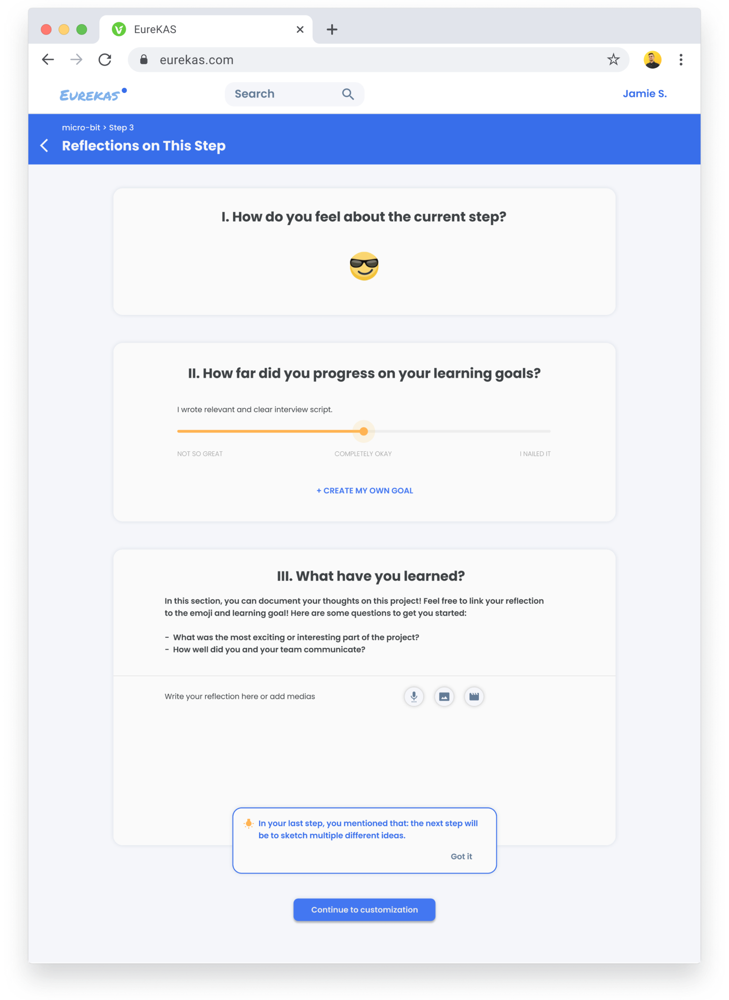

Overview
Duration: 4 months | Client: Kentucky Avenue School (K12) | Teammates: GyuEun Park, Anna Boyle, Yu Zhao
I worked closely with stakeholders across
the client school, implemented high-fidelity website prototype individually, redesigned the workflow and end-to-end interactions, and created visual artifacts for 3 design cycles.
Project-Based Learning in KAS
In project-based learning (PBL), completing projects of certain topics is the major quest throughout the semester. Students are asked to document their process and design a portfolio showcasing their thinking and learning accordingly. Portfolio-making is an iterative and convergent process and requires learning by doing. Kentucky Avenue School (KAS) is a small school but with big value of addressing making and documenting.
Who Do We Design for?
Cursory approach and stressful writing hinders students’ deeper understanding of the reflection process
"
"
"
I don’t like it if the writing is really long.
I had to summarize all at once and it’s really stressful.
I like the set up. It looks really nice. It’s very organized, if you know how to use it. I’m more comfortable using it now.
Sometimes I don’t really have thoughts about it because it’s just schoolwork. But then, sometimes I do feel strongly about something.
Teachers struggle to integrate documentation and reflection into the usual learning flow due to time and space constraints
"
"
"
I don't have a regularly scheduled time to either document or make them check in, but I should.
It's always very difficult because there's always some part of it that is either hard for the kids to use or hard for the teachers to use.
It's so much easier to have a discussion about it than feeling like the kids have to write for it.
Problem Space
How Might We align students intrinsic motivation with learning goals in the context of project-based learning?
Solution
SOLUTION
A web-based tool that creates a rewarding, natural, and integrated reflection experience
A web-based tool that creates a rewarding, natural, and integrated reflection experience
The solution we proposed is based on three design principles: rewarding, natural, and integrated. Students can document their thinkings along the process, reflect on their learning with scaffolded supports, and easily visualize their progress at their own wills.
Project journey
Support big picture understanding with relationships between different steps and important attributes of each step.


Playground
Store unorganized thoughts and documentation with customizable tagging system. Resources can be easily fectched when used.
Reflection scaffold
Put users’ foot in the door by presenting a simple and fun question at first. Structure their choices and remove friction along the way using prompts and intuitive visualizations.

Contextual Usage
Measuring Success
Aimee Defoe
Principle at Kentucky Avenue School
“Attacking the intrinsic motivation is a smart ambitious approach. Also liked the nudges that help students connect across steps.”
Principle at Kentucky Avenue School
“Attacking the intrinsic motivation is a smart ambitious approach. Also liked the nudges that help students connect across steps.”
Marti Louw
Director of Learning Media Design Center
“Very thoughtful design process revealed, and resulting project idea that is sensitive to the learning environment, and a really appealing direction.”
Director of Learning Media Design Center
“Very thoughtful design process revealed, and resulting project idea that is sensitive to the learning environment, and a really appealing direction.”
Design Decisions
OPTIMIZE LEARNING & USER
EXPERIENCE
Iterate 3 aspects (visualization, scaffolding, and customization) to serve user needs and design principles
Explore the scaffolding steps
How to motivate and support students to write reflections?
HYPOTHESIS
Students need freedom and guiding questions to get
explicit directions of writing reflections. The initial solution only
provided choices of writing instead of directing their writing.
INSIGHTS
We used the content strategy of making instructions explicit and provide vairous detailed prompts. Students are hence able to easily understand and open their minds.
Compare the intuition behind visualizations
How can students grasp a clear idea of the project process intuitively?
HYPOTHESIS
Intuitive visualization can facilitate students learning of metacognitive skills. The initial solution we proposed was to visualize milestones of a project by sized “bubbles” indicating the duration of the step.
INSIGHTS
“Milestone” is not the language used by students and “bubbles” seem confusing. So we decided to use conventional visual representations (flow chart) to convey the idea of the project journey.
Evaluate the freedom of customization
Which extent should the flexibility of personalization be provided to?
HYPOTHESIS
Students would like to have as much freedom as possible when designing their portfolio. The initial solution we proposed had full flexibility in customizing the cover of the step.
INSIGHTS
Students got confused by complicated functionalities. So we focused only on customizing cover pictures, which is validated in previous research as a motivation of students designing portfolios.
Design System
Takeaways
We can continuously test prototypes with our users and different stakeholders to reduce the gap between EureKAS and an optimal experience. The design system can be developed further based on current color patterns and typography. The choice of appropriate prototype forms should be suitable for evaluative testing. Every interactions should target on specific user needs and delete other unrelevant features.